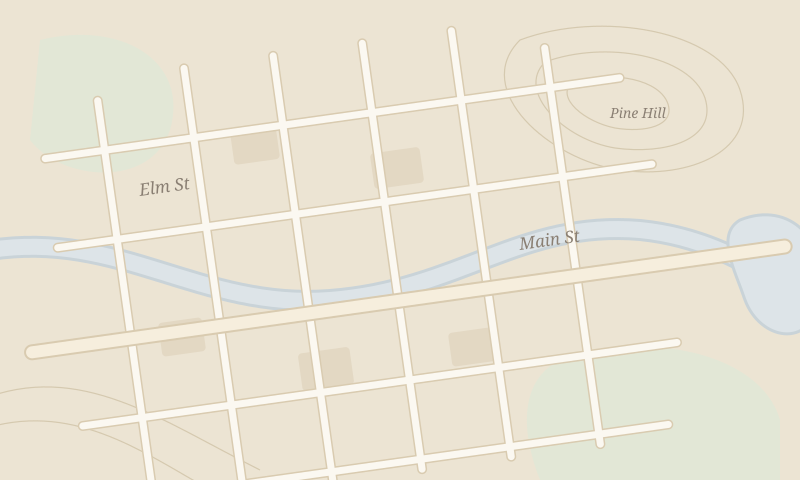

Open atlas
A life in stories
ChildhoodYouthWorkFamilyLater
A family keepsake, told out loud
Record a grandparent's memories one at a time. Story Atlas writes them down, puts them in life order, and pins each one to the map where it happened.
1 · Record
Tap the microphone and let them speak. Story Atlas listens, transcribes the words, and detects any places they mention.
2 · Place
After recording, search for the location the story happened and drop a pin. You're always in control — nothing is placed automatically.
3 · Listen
Browse the living atlas — tap any pin to read the transcript, or use the Stories list to jump through a lifetime in order.
Everything stays on this device
Recordings, transcripts, and pins are stored entirely in your browser — in IndexedDB for audio and localStorage for story data. Nothing is uploaded to any server. If you clear your browser data, the stories will be lost, so use the Download backup button in the Stories tab regularly.
Tips for a great recording